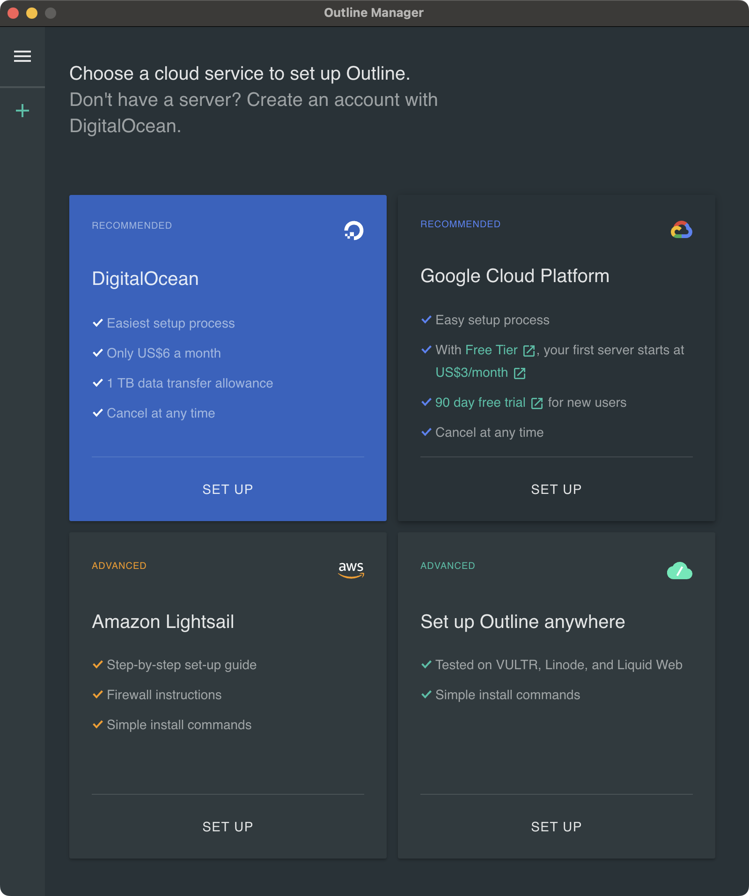
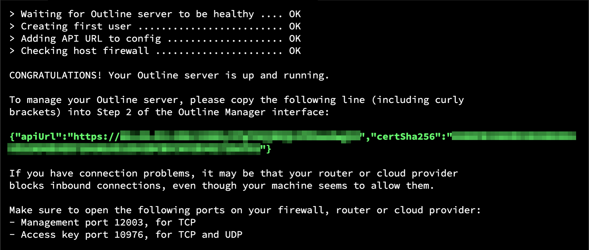
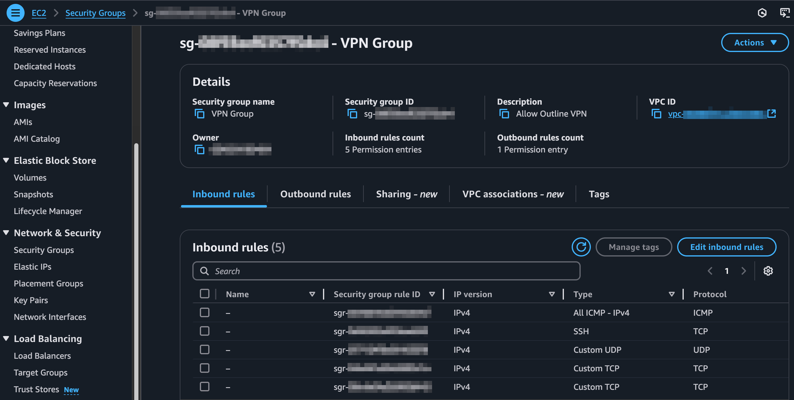
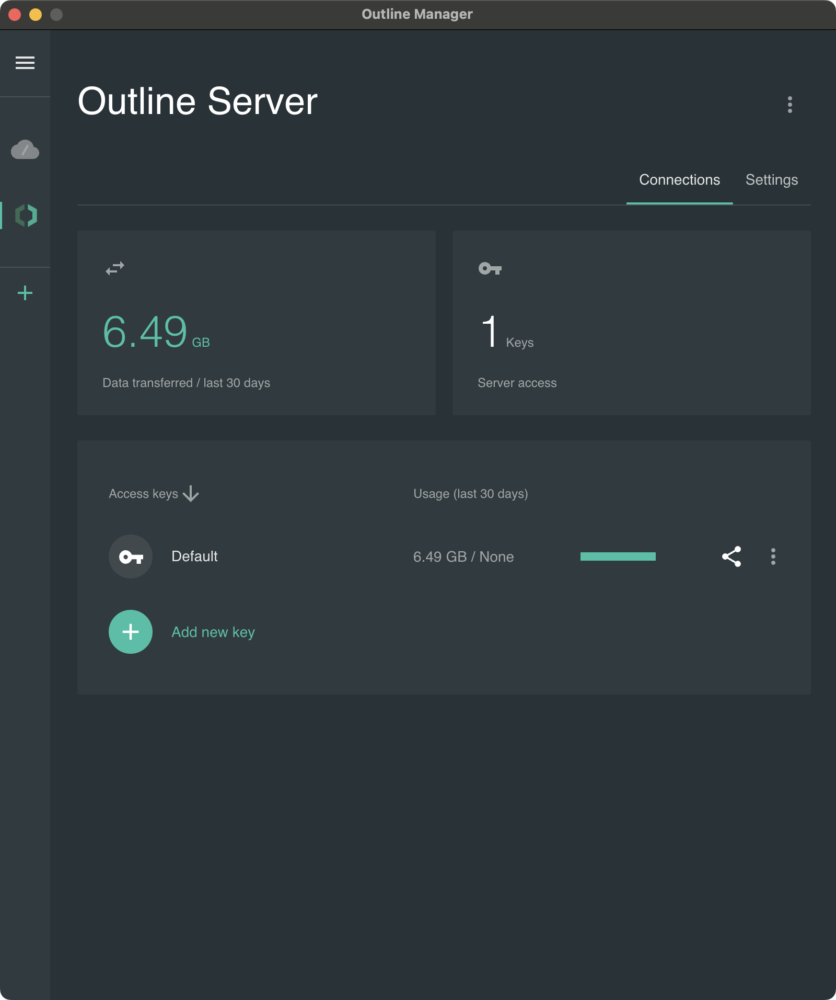

손쉽게 나만의 VPN 서버 만들기
과거에는 VPN 서버를 설치하려면 꽤 많은 공정을 거쳐야 했다.
리눅스 서버에 OpenVPN을 설치하고 인증키를 설정하고 설정 파일 수정 및 방화벽 규칙 추가까지 전부 쉘에서 진행하고 클라이언트로 Tunnelblick을 사용했었다.
물론 상용 VPN을 사용하면 매우 편리하다. 다만 우리가 VPN을 이용하는 가장 주요한 목적은 익명성 보장에 대한 것인데 상용 VPN 회사들은 어쨋든 우리의 모든 네트워크 패킷을 볼 수 있는 권한이 있다. 모든 패킷이 암호화되어 있다고 하고 신뢰성이 높다고 주장한들 방법이 없는 것은 아니다.
이 모든 의심을 불식시키는 확실한 방법은 아무도 주목하지 않을 나만의 서버를 구축하는 것이다.
나는 멀티 플랫폼을 지원하면서 신뢰할 수 있는 VPN 서비스를 쉽게 구축할 수 있는 솔루션으로 Outline VPN을 알게 되었다. Outline VPN은 구글 산하의 Jigsaw라는 팀에 의해 개발되었다. 또한 이 프로젝트는 오픈 소스로서 2018, 2022, 2024년에 외부 업체로부터 보안 감사도 받았다고 명시되어 있다.
Outline은 Manager, Client로 나뉘어지는데 Manager는 VPN 관리 프로그램이라 생각하면 된다.
맥용 프로그램을 받아 실행하면 다음과 같은 화면을 볼 수 있다.
여기서 서버를 구축할 클라우드 서비스를 정해야 한다. 저렴하게 사용한다면 선택지는 Digital Ocean, Vultr, AWS 정도이다.
Digital Ocean은 저렴하고 서비스 경험도 괜찮지만 한국, 일본, 홍콩에 데이터 센터가 없다.
Vultr도 저렴한데 일본 데이터 센터에 서버를 구축하고 Ping을 보내니 90ms가 넘게 나와 응답 속도가 느렸다.
비용, 네트워크 속도, 데이터 센터 지원 범위를 고려하면 AWS가 현재서로 가장 나은 선택이라 본다.
만약 Free tier에 해당되면 EC2 인스턴스로 1년은 매우 적은 비용으로 VPN 서버를 운영할 수 있고 그렇지 않으면 Lightsail을 사용하는 것을 권한다.
나는 EC2 인스턴스에 서버를 구축하기로 했기 때문에 "Set up Outline anywhere" 메뉴를 선택했다.
그러면 다음 화면처럼 설치 커맨드가 출력된다.
EC2 인스턴스를 AWS Linux로 설치한 경우 베이스가 CentOS 인데 설치 커맨드를 실행하면 도커 엔진 설치 실패가 출력될 것이다. 이 문제를 해결하려면 도커 엔진을 별도로 설치하는 등 번거로운 절차를 거쳐야 한다.
그래서 나는 데비안 리눅스를 설치하고 설치 커맨드를 실행했다. 설치가 완료되면 다음과 같이 출력된 녹색으로 보이는 텍스트를 Manager에 붙여넣으면 된다.
본래 별도 서버에 설치를 하면 내부 방화벽에 지정된 포트를 허용하는 과정을 거쳐야 한다. 데비안에서는 ufw status 로 현재 방화벽 상태를 볼 수 있고, ufw allow 12003/tcp와 같이 포트를 허용하고, ufw reload로 변경 사항을 적용할 수 있다. 하지만, AWS에서 EC2로 서버를 구축했다면 기본으로 인스턴스 내부 방화벽은 작동하지 않는다.
AWS에서는 다음과 같이 EC2 인스턴스가 속한 Security Group에서 inbound rule로 추가해줘야 한다. VPN를 이용할 때 서버의 IP는 노출되기 때문에 최선의 보안을 위해 SSH 접근은 자신이 접속하는 위치의 IP만 허용하는 것을 권한다.
방화벽을 넘어 Manager가 정상적으로 서버에 접속하면 다음처럼 접근 키, 데이터 사용량 관리 화면이 나온다.
여러명이 하나의 VPN 서버를 사용한다면 여기서 Key를 추가해서 공유해주면 된다. 그렇게 공유받은 키를 클라이언트에서 넣고 접속하면 바로 VPN을 경유할 수 있게 된다.
또한 세팅에서 키마다 데이터 이용 제한을 지정할 수도 있다. 지원하는 클라이언트는 안드로이드, 윈도우즈, iOS, MacOS, Linux로 주요한 플랫폼은 모두 가능하다.
키 값을 넣고 접속한 후 Show IP와 같은 사이트를 통해 현재 접속 아이피와 위치를 확인할 수 있다.
내 로컬 라우터 주소가 아닌 서버 주소가 뜨고 위치가 다른 지역이라면 성공한 것이다.
좀 더 고찰해보면 완전한 익명성을 위해서는 심도있는 고민을 해야 할 수 있다.
이렇게 VPN 서버를 구축하면 자신의 위치를 1차적으로 숨길 수 있는 것은 맞지만 서버의 IP는 드러난다. 만약 이 서버 경유를 불법적인 행위에 이용하면 영장이 발부되어 AWS에 의해 정보가 제공될 수 있다.
우리 모두 신용카드를 AWS에 등록하지 않았는가.
이 방법은 범죄 행위에 이용하지 않는한 분명 나에게 1차적 익명성을 제공한다. 즉, 완전한 익명성을 위해서는 AWS가 자신들의 클라우드 이용자 정보를 누군가에 제공하지 않는다는 전제가 필요하며 VPN을 경유하여 행한 나의 행위가 누군가의 단일 타겟이 되지 않아야 한다. 많은 영화에서 보지 않았는가 비가 올때 군중 속에 동일한 우산을 쓴 사람이 되면 강력한 권한을 갖고 있어도 찾기 쉽지 않다.
여기서 추적이 훨씬 힘든 더 강력한 익명성이 필요하다면 Tor 프로토콜을 시도할 수 있다.
Tor로 불편함을 느낀다면 여러 지역에 별도의 데디케이트 서버를 두고 multi-hop routing을 하는 등 더 복잡한 방법을 강구해야 할 것이다.
하지만 그 정도 익명성을 원하는 사람은 애드워드 스노우든와 같이 기밀을 알고 있는 자이거나 Cyber Crimes에 게시된 인물들이 아닐까...